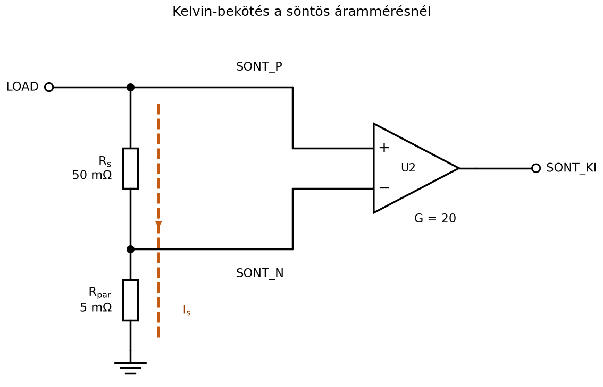
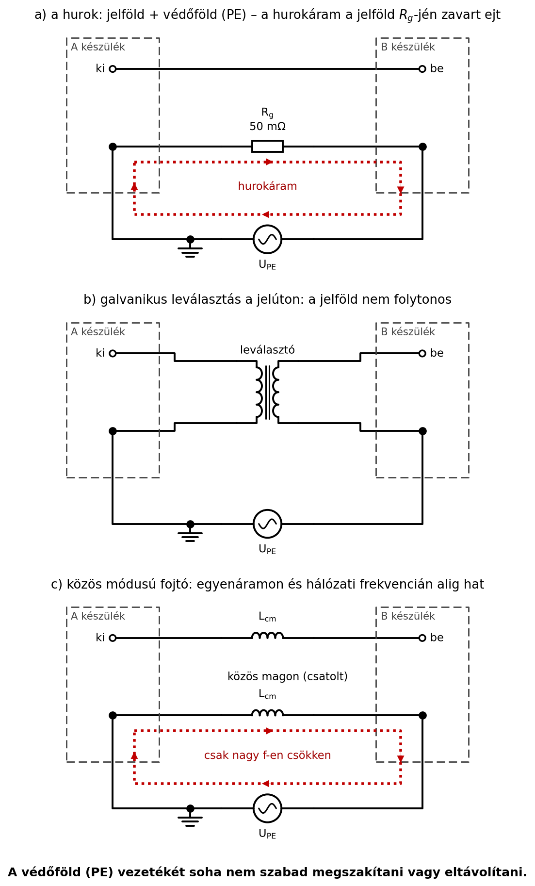
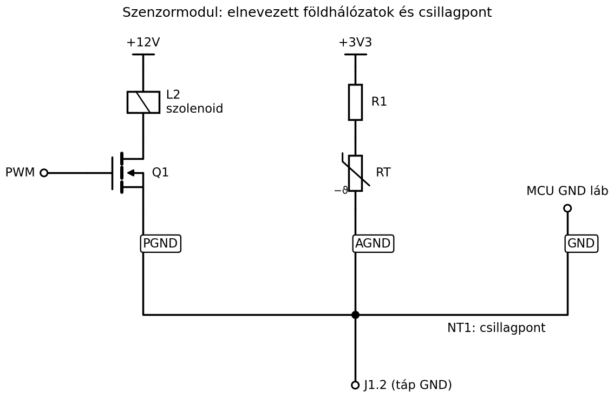

Ennek az alfejezetnek a végére:
Előfeltétel: Töltés, áram és a zárt áramkör, Feszültség, potenciál és a föld, A buck konverter és Csatolási mechanizmusok és áthallás.
A szenzormodul kapcsolási rajzán minden „földbe megy”: a szolenoidot kapcsoló MOSFET, az NTC-osztó, a söntös árammérő és a mikrovezérlő ugyanazt a háromvonalas GND jelet viseli. A rajz szerint ezek egyetlen, azonos potenciálú pontot jelentenek. A valóságban vezetéken és rézsíkon vezetnek vissza az áramok, ezeknek ellenállása és induktivitása van. Ha a szolenoid 1 A-es árama ugyanazon a rézszakaszon halad, mint amelyhez az NTC-mérés viszonyít, a hőmérséklet tévedni fog. Ezt a rajz nem mutatja, ha nem rögzítjük.
Minden áramnak van visszatérő útja (Töltés, áram és a zárt áramkör). A föld nem nyelő: nem „elnyeli” az áramot, hanem ugyanannyi áram folyik rajta vissza a forrásba, amennyi kiment. A föld csak egy vezető, amelyet referenciaként is használunk. Két kellemetlen következmény:
Hasonlat: a város forgalma lassú tempóban a legrövidebb és legszélesebb utakon oszlik el (ellenállás). Gyors forgalomnál viszont az dönt, hogy a visszaút mennyire fut szorosan az odaút mellett, mert az áram az odaúttal együtt alkot hurkot. A hasonlat korlátja: az áram nem „dönt”, hanem a törvényeknek megfelelően egyszerre oszlik meg minden úton.
Egy földszakasz helyettesítő képe soros és ; a rajta eső feszültség
Egyenáramon és lassú változásnál az ellenállás, gyors éleknél az induktív tag dominál (). Ez a közös impedanciás csatolás oka (Csatolási mechanizmusok és áthallás).
Definíció. A földpattogás (ground bounce) az IC belső földjének pillanatnyi elmozdulása a külső földhöz képest, mert a láb és a vezeték induktivitásán gyorsan változó áram folyik. Ha kimenet egyszerre vált, mindegyik 10 mA-t 2 ns alatt, és a közös földút induktivitása 5 nH (mintaadat):
Ennyivel csökken a vevő logikai zajtartaléka (Logikai szintek, családok és kimenettípusok).
Két párhuzamos visszatérő útra az áramosztás impedanciákkal:
Itt a hurokinduktivitás: az a hurok, amelyet az adott visszaút a jelvezetővel együtt alkot (Mágneses tér és induktivitás). Legyen az „egyenes” út kis ellenállású, de nagy hurkú (1 mΩ, 60 nH), a jelvezető alatti kis hurkú, de nagyobb ellenállású (10 mΩ, 6 nH), mintaadatként:
Összefüggő, széles földsíkban (ground plane) nincs külön „út”, az áram eloszlik. Nagy frekvencián a magasságban futó jelvezető alatt az eloszlás
és a vezető alatti sávban az áram hányada folyik: -n belül 50%, -n belül kb. 80%. (Végtelen sík, vékony vezető; a modell a nagyfrekvenciás határ.) Egyenáramon az eloszlás ezzel szemben a sík teljes szélességére kiterjed. A nagyfrekvenciás visszatérő áram a legkisebb induktivitású úton halad, vagyis a jelvezető közelében, ha engedjük.
Ha a síkban rés (vágás) van a jelvezető alatt, a visszaáramnak ki kell kerülnie: a hurok kinyílik. Egy 5 cm-es jelvezetőnél, 0,2 mm sík fölötti magasságban (0,1 mm sugarú huzallal számolva) a hurokinduktivitás kb. 13 nH, egy 50 × 10 mm-es kerülő hurok (0,1 mm huzalsugár) kb. 105 nH. 20 mA-es, 2 ns-os élnél ez 0,13 V helyett 1,05 V zavar, és sokkal nagyobb sugárzás (Az EMC alapjai: forrás, csatolás, vevő: a hurokterület a zaj antennája).
Továbbvitt eredmény. A visszatérő áram alacsony frekvencián a legkisebb ellenállású, nagy frekvencián a legkisebb hurokinduktivitású úton folyik, ezért minden gyors jelnek folytonos, közeli visszaút kell. Ezt a Felfutási idő, sávszélesség és távvezetékek, a Reflexió, lezárás és illesztés, a Tápintegritás és hidegítés, a Kapcsolási rajz konvenciói és a NYÁK-tervezőnek átadott kényszerek és a Tervezési átvizsgálás és átadás a NYÁK-tervezésnek használja.
| Stratégia | Mit jelent | Erősség | Gyengeség |
|---|---|---|---|
| soros egypontos (láncolt) | az áramkörök egy közös vezetéken fűzve érnek a referenciapontba | egyszerű | a közös szakaszon az áramok összeadódnak |
| csillag (star, párhuzamos egypontos) | minden blokk külön vezetéken egy közös pontba fut | nincs közös impedancia kis frekvencián | hosszú vezetékek induktivitása; nagy frekvencián rossz |
| többpontos (összefüggő sík) | minden alkatrész a legközelebbi ponton kapcsolódik a síkhoz | kis induktivitás, jó nagy frekvencián | egyenáramon a nagy áram a síkban oszlik meg |
| hibrid | kis frekvencián egypontos, nagy frekvencián többpontos (kondenzátorral, ferrittel) | mindkét tartomány | gondos tervezés, rezonanciaveszély |
Ökölszabályként gyakran 1 MHz körülre teszik azt a határt, ahol az egypontosról a többpontosra érdemes váltani; ez hüvelykujjszabály, a valódi kritérium a vezetékhossz és a hullámhossz, illetve az, hogy mekkora az -hez képest.
A vegyes jelű (mixed-signal) rendszerben érzékeny analóg és zajos digitális, illetve teljesítmény áramok vannak együtt. Két megközelítés versenyez (a gyakorlat vitatott pontja):
Az osztott föld nem automatikusan jobb. Csapdái:
Ha osztasz, a jelek csak a hídon (a kapcsolódási pontnál) menjenek át, és csak egy ilyen híd legyen. Az átalakító IC AGND és DGND lábának kezeléséről az adatlap a mérvadó (adatlapfüggő); sok gyártó mindkettőt ugyanarra a tömör síkra kötné. Kezdőként a legtöbb kis modulhoz a közös tömör föld + zónázás a biztonságosabb választás.
A gyorsan változó nagy áramú forró hurkokat (A buck konverter) a lehető legkisebbre kell zárni: a buck bemeneti kondenzátorától a kapcsolón át vissza, a motor vagy szolenoid áramköre a szabadonfutó diódával (Biztonságos működési tartomány, lavina és induktív terhelés), a MOSFET gate-meghajtó hurka a gate-ellenállással (Kapcsolási folyamat: gate-töltés, Miller-plató és meghajtás). Ezek árama ne folyjon át a mérő föld vezetékén.
A söntös árammérésnél (Érzékelők illesztése és a jelút hibaköltségvetése) Kelvin-bekötés (négyvezetékes) kell: az erősítő mérővezetékei (SONT_P, SONT_N) közvetlenül a sönt kivezetéseiről indulnak, nem a föld egy távolabbi pontjáról.

Ha a SONT_N a rajz alján lévő földpontról indulna, a mérés a sönt és feszültségét látná: a mérési hiba .
Definíció. Földhurok (ground loop) akkor van, ha két pont között egynél több földelési út zárt hurkot alkot. A szenzormodul és a mérőszámítógép jelkábellel van összekötve (jelföld), és mindkettő a saját védőföldjén keresztül is (védőföld, protective earth, PE): a hurok kész.

A hurkon két dolog hajt áramot: a két földpont potenciálkülönbsége és a hurkon átmenő változó mágneses fluxus. Például µT amplitúdójú, Hz-es tér -es hurokban µV-ot indukál. Ha a földpontok között 100 mV potenciálkülönbség van, és a hurok ellenállása 0,5 Ω (mintaadatok), 200 mA folyik, és a jelföld 50 mΩ-os szakaszán 10 mV zavar esik, sorosan a hasznos jellel.
A hurok kezelése a rajzon:
Az alváz (chassis) az árnyékolás és az ESD-áramok útja, a védőföld a személyvédelemé (Az áram élettani hatásai és a törpefeszültség), a jelföld a jelek referenciája. Összekötésük (jellemzően a csatlakozónál, esetleg kondenzátorral és ellenállással párhuzamosan) tervezői döntés, amelyet a rajzon rögzíteni kell. A védőföld vezetékét soha nem szabad megszakítani zavar csökkentése érdekében sem.
A rajz akkor mondja el a földelési tervet, ha a földhálózatoknak saját nevük van, és az összekötésük látható alkatrész (net tie, vagy 0 Ω-os jumper), megjegyzéssel.

A megjegyzésben legalább ezek szerepeljenek: hol a csatlakozási pont; mely hurkok a forró hurkok; a SONT_P/SONT_N Kelvin-, differenciális párként vezetendő; a csatlakozó tűkiosztásában a gyors vagy nagy áramú jelek mellett legyen saját GND-láb (Kapcsolási rajz konvenciói és a NYÁK-tervezőnek átadott kényszerek). A rétegek, furatok, sík-alakzatok már a NYÁK-tervezés témái.
Továbbvitt eredmény. A földhálózatokat névvel (GND, AGND, PGND) jelöljük, és a csillagpontot, illetve az összekötés helyét a rajzon rögzítjük. A záróprojektek (1. záróprojekt: védett tápegység 12 V-ról 5 V-ra és 3,3 V-ra, 2. záróprojekt: érzékelő-illesztő és mérőlánc, 3. záróprojekt: MOSFET-es meghajtó induktív terheléshez) és a Kapcsolási rajz konvenciói és a NYÁK-tervezőnek átadott kényszerek ezt követik.
A szolenoid A-t vesz fel, a közös földszakasz mΩ (5 cm-es, 1 mm-es, 35 µm-es rézcsík), az NTC-osztó felső ellenállása kΩ.
Józanész: a hiba meleg ponton nagyobb, mert az -hányad nő, és az NTC érzékenysége csökken. Csillagponttal a szolenoid árama nem megy át a mérő szakaszán, a hiba gyakorlatilag nulla. Ez a tartósan folyó áram hibája. PWM-nél a 100 nF-os szűrő (időállandója kb. 0,5 ms, jóval hosszabb a 50 µs-os periódusnál) átlagol, így a mérés a kitöltéssel arányos, -szeres eltolást lát; ez mintavételi időzítéssel sem kerülhető el, ezért a helyes rajz a megoldás.
Kelvin: mΩ rossz bekötés mellett 1 A-nél mV-tal több, azaz a -as erősítő kimenetén 100 mV hiba (10%).
import numpy as np
from elkit import emc, units
from elkit import szenzormodul as sm
print(" f egyenes vezető alatt")
for f in (0, 1e3, 26.5e3, 1e6):
i1, i2 = emc.two_path_split(f, 1e-3, 60e-9, 10e-3, 6e-9)
print(f"{units.fmt(f, 'Hz'):>10} {abs(i1):8.0%} {abs(i2):10.0%}")
h = 0.2e-3
for k in (1, 3, 10):
print(f"±{k}h sávban az áram {emc.return_fraction_within(k * h, h):.0%}-a folyik")
l_sik = emc.inductance_wire_over_plane(0.05, h, 0.1e-3)
l_kerulo = emc.inductance_rect_loop(0.05, 0.01, 0.1e-3)
print(f"sík fölött {units.fmt(l_sik, 'H')}, kerülővel {units.fmt(l_kerulo, 'H')}")
def r_ntc(t):
return sm.NTC_R25 * np.exp(sm.NTC_B * (1 / (t + 273.15) - 1 / 298.15))
def t_olvasott(u):
r = sm.R_NTC_SOROS * u / (sm.U_3V3 - u)
return 1 / (1 / 298.15 + np.log(r / sm.NTC_R25) / sm.NTC_B) - 273.15
u_z = 25e-3 * sm.U_BE / sm.SZOLENOID_R
for t in (25, 85):
rt = r_ntc(t)
u_jo = sm.U_3V3 * rt / (sm.R_NTC_SOROS + rt)
du = u_z * sm.R_NTC_SOROS / (sm.R_NTC_SOROS + rt)
hiba = t_olvasott(u_jo + du) - t
print(f"{t} °C: eltérés {units.fmt(du, 'V')}, hőmérséklethiba {hiba:+.2f} K") f egyenes vezető alatt
0 Hz 91% 9%
1 kHz 91% 10%
26.5 kHz 65% 65%
1 MHz 9% 91%
±1h sávban az áram 50%-a folyik
±3h sávban az áram 80%-a folyik
±10h sávban az áram 94%-a folyik
sík fölött 13.2 nH, kerülővel 105 nH
25 °C: eltérés 12.5 mV, hőmérséklethiba -0.39 K
85 °C: eltérés 21.8 mV, hőmérséklethiba -2.17 KA 26,5 kHz-es sorban a két arány összege több 100%-nál: a két ág árama fázisban eltér, és a táblázat az abszolút értékeket mutatja. A , , sorok a nagyfrekvenciás határesetre vonatkoznak.
Gondolkodj előre: 100 Hz-ről 10 MHz-re növeled a frekvenciát. Melyik utat választja a visszaáram, és mennyire szűkül össze a sík áramsávja?
emc.return_current_distribution segítségével számold ki,
hány százalék folyik a
sávban 1 kHz, 100 kHz és 10 MHz frekvencián,
mm és 20 mm széles sík esetén. Mit tapasztalsz
mm-hez képest?A föld nem nyelő, hanem vezető, amelyen a visszatérő áramok folynak: (közös impedancia, földpattogás). Alacsony frekvencián a legkisebb ellenállású, nagy frekvencián a legkisebb hurokinduktivitású út viszi az áramot, azaz a jelvezető alatti és melletti; rés vagy kerülő hurkot nyit. Stratégiák: egypontos/csillag (kis frekvencia), többpontos tömör föld (nagy frekvencia), hibrid; vegyes jelnél rendszerint tömör föld zónázással, az osztott föld nem automatikusan jobb (vitatott). A forró hurkok kicsik, a sönt Kelvin-bekötésű, a földhurkot leválasztás vagy differenciális átvitel kezeli, a védőföld sértetlen. A rajzon nevezett földhálózatok és megjelölt csillagpont szerepeljen, a NYÁK-tervezőnek szóló megjegyzéssel. Példánkban egy 25 mΩ-os közös szakasz 1 A-nél 85 °C-on több mint 2 K mérési hibát okoz.
V.
Egyenáramon ; nagy frekvencián . Átmenet: kHz.
25 °C-on a csomóponti hiba , a hőmérsékleti érzékenység 31,9 mV/K. K, tehát mΩ. A csillagpontos rajz egyszerűbb, mint ilyen kis ellenállás garantálása.
. 3 A-nél a plusz feszültség 6 mV, a kimeneten mV.
A hurok: modul jelföld → kábelföld → PC jelföld → PC védőföld → épület földelése → modul védőföld → modul jelföld. Megoldások: galvanikus (digitális) leválasztó a jelúton – korlát: ára, sávszélessége, és külön táp kell a leválasztott oldalra; differenciális átvitel – korlát: csak a vevő megengedett közös módusú tartományán belül véd. (A közös módusú fojtó csak nagy frekvencián segít.)
for h in (0.2e-3, 0.5e-3):
for f in (1e3, 100e3, 10e6):
r = emc.return_current_distribution(f, h, 20e-3, n=201)
sav = np.abs(r["x"]) <= 3 * h
print(f"h = {h * 1e3:.1f} mm, {units.fmt(f, 'Hz'):>8}: "
f"{abs(r['current'][sav].sum()):.0%}")h = 0.2 mm, 1 kHz: 7%
h = 0.2 mm, 100 kHz: 46%
h = 0.2 mm, 10 MHz: 82%
h = 0.5 mm, 1 kHz: 15%
h = 0.5 mm, 100 kHz: 64%
h = 0.5 mm, 10 MHz: 81%10 MHz-en a sávban mindkét magasságnál kb. 80% folyik, mert az eloszlás a -val skálázódik. 1 kHz-en az áram a teljes síkban terül szét, a sávba nagyjából a szélességével arányos hányad jut (ezért nagyobb -nál több). 100 kHz-en az eloszlás még nem érte el a nagyfrekvenciás alakot; mm-nél a sávban már 64%, mm-nél még csak 46% folyik.